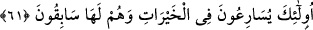

yerine getiren kimse korkar ve endişe ederse tâatleri terk eden kimse nasıl olur da
korkmaz?!
Şeyh Sa‘dî (k.s.) der ki:
O gün herkesin yaptıklarından, söylediklerinden sorulur
Korkudan ulu peygamberlerin vücûdu bile titrer
Nebilerin dehşet içinde kaldıkları bir yerde
Sen günahlarına ne bahaneler bulacaksın, söyle bakalım!
61. İşte onlar, iyiliklere koşuşurlar ve iyilik için yarışırlar.
“İşte onlar,” başkaları değil özellikle açıklanan yüce sıfatlara sâhip kimseler
“iyiliklere” nâil olmak için “koşuşurlar” sâlih ameller karşılığında vaadedilen
dünyâdaki peşin hayırlar/iyilikler de bunlara dâhildir. Nitekim Allah Teâlâ: “Allah
onlara dünya nimetini ve daha da güzeli, âhiret sevabını verdi.” (Âl-i İmran, 3/148);
“Ona dünyada mükâfatını verdik. Şüphesiz o, âhirette de sâlihler (zümresin)
dendir.” (el-Ankebût, 29/27) buyurur. Dünyada bu mükâfâtlar onlara hemencecik
verilince onlar da onları elde etmek için koşuşurlar ve acele ederler. Böylece (55-56.
âyetlerde belirtildiği üzere) kâfirler için geçerli olmayan bu hususlar onlar için mevcud
olmuş olur.
el-İrşâd’da der ki: Âyette “ ” harfinin “ ” harfine tercih edilmesi, “Rabbinizin
bağışına ve takva sahipleri için hazırlanmış olup genişliği gökler ve yer kadar olan
cennete koşun!” (Âl-i İmran, 3/133) âyetinde olduğu gibi onların hayırların dışına
çıkıp koşarak onlara yöneldiklerini değil, çeşitli hayırlarla meşgul olduklarını
bildirmek içindir.
“Ve iyilik için yarışırlar.” Yâni dünyada onlara peşin verildiği için âhiretten önce
onlara nâil olurlar.
Büyüklerden birisi der ki: “Sâbikûnun (önde gidenlerin) dereceleri ve vuslata
erenlerin üstün özellikleri boş iddiâlar, ihmal ve vakitleri zâyi etmekle değil, hayırlara
koşmakla taleb edilir. Âdâb, türlü riyâzatlar ve mücâhedeler olmadan makamlara
ulaşmak isteyen kimse kaybeder, hüsrana uğrar ve o makamlara ulaşmaktan mahrum
kalır.
et-Te’vîlâtü’n-Necmiyye’de der ki: “İşte onlar, iyiliklere koşuşurlar” yâni onlar
Allah’a yönelirler, O’ndan başkasından (mâsivâ) yüz çevirirler. Allah’ın kendileri için
ezelde takdir ettiği güzelliğe göre sıdk ayağıyla ve güzel bir gayretle koşuşurlar “ve”
ezelde takdir edilen ilâhî inâyet miktarınca “iyilik için yarışırlar.”
Yani ezelde takdir edilen inâyet kadar kul hidâyet yolunda koşturur. Her sâlikin